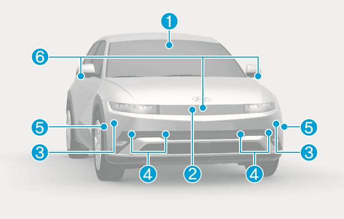
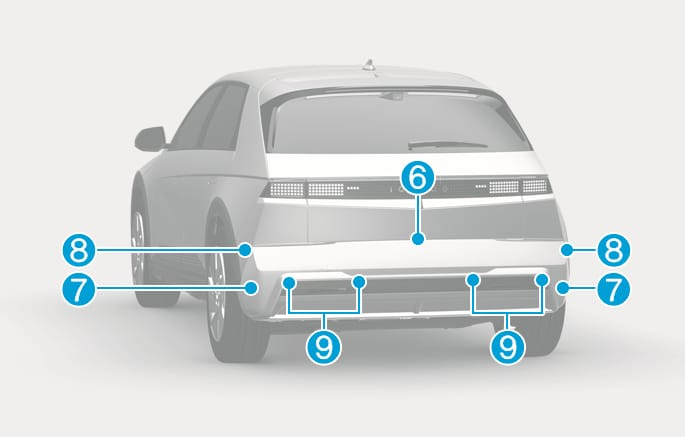

인식 센서
각 운전자 보조 기능은 여러 센서의 정보를 사용합니다. 인식 센서의 위치는 아래 그림을 참고하십시오.

2C_ADASSensor

2C_ADASSensor_1
- 전방 카메라
- 전방 레이더
- 전측방 레이더
- 전방 초음파 센서
- 전측방 초음파 센서
- 광각-전방/측방/후방 카메라
- 후측방 레이더
- 후측방 초음파 센서
- 후방 초음파 센서
-
인식 센서 및 주변부를 임의로 분리하거나 충격을 가하지 마십시오.
-
인식 센서를 교체하거나, 분리했다가 다시 장착할 때는 당사 직영 하이테크센터나 블루핸즈에서 점검을 받으십시오.
-
인식 센서 및 주변부에 충격이 가해지면 클러스터에 경고등 또는 경고문이 뜨지 않더라도 운전자 보조 기능의 기능이 정상적으로 작동하지 않을 수 있습니다. 당사 직영 하이테크센터나 블루핸즈를 방문하여 점검을 받으십시오.
-
인식 센서 또는 주변부가 오염되거나 파손될 경우 운전자 보조 기능이 제한 될 수 있습니다.